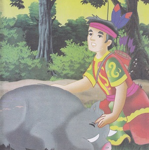

Manusia Ular
( Cerita Rakyat Kalimantan Tengah )
Di sekitar aliran Sungai Mahoroi yang merupakan anak sungai Kahayan, hiduplah seorang pemburu bernama Sangi, Ia pandai menyumpit dan selalu berhasil memburu babi dan rusa.
Suatu Ketika, Sangi pergi berburu seperti biasanya, tetapi ia tidak mendapatkan apa-apa. Karena sudah sore, ia pulang dengan perasaan kesal. Di dalam perjalanan, ketika melewati tepi sungai, ia melihat air tepian sungai itu sangat keruh. Disana ada jejak kaki, babi hutan. Sangi yakin bahwa seekor babi hutan baru saja minum di sungai. Ia pun mengikuti jejak babi tersebut dengan penuh harapan.
Tiba - tiba ia melihat pemandangan yang mengerikan. Seekor babi hutan sedang di terjang oleh seekor ular raksasa yang sangat besar, Sangi sangat ketakutan dan bersembunyi di semak-semak, Ia memperhatikan kejadian tersebut secara sembunyi- sembunyi.
Setelah sekian lama , Sang ular raksasa tak juga berhasil menelan babi hutan itu. Akhirnya, Sang ular pun menyerah. Ia memandang ke arah tempat Sangi bersembunyi.
Tiba- tiba, ular raksasa itu berubah wujud menjadi seorang pemuda yang sangat tampan. Pemuda itu menghampiri Sangi dan langsung memegang tanganya.
" Kau telah melihatku sedang berusaha menelan babi hutan, ' Sekarang kamu harus menelan babi ini bulat - bulat ." Kata pemuda jelmaan raksasa itu.
"Aku tak bisa...aku tak bisa " ujar Sangi Ketakutan, "Makan sekarang”, bentak pemuda tadi.
Akhirnya, Sangi melakukan perintah tersebut dengan penuh Ketakutan, Ajaibnya, ia teryata mampu melaksanakan perintah itu dengan mudah seolah-olah ia benar-benar seekor Ular.
"karena kau telah mengintaiku, mulai saat ini pula, Kau menjadi manusia jelmaan ular seperti diriku" Kata pemuda jelmaan ular tersebut, " Tetapi, kau boleh tenang karena selama kau bisa merahasiakan kejadian ini, Kau tetap bisa mempertahankan wujud manusiamu. Manusia seperti kita bisa mempertahankan kemudaan kita selama-lamanya.
Mulai saat itu, Sangi berubah menjadi manusia jelamaan Ular raksasa. Ia merahasiakan hal ini kepada siapapun, Ia bisa bertahan hidup hingga berusia 150 tahun. Namun, Keadaannya yang selalu muda dan sehat membuat keturunannya bertanya-tanya. Karena terus di desak, Sangi membuka rahasianya, Ia telah mendengar apa yang selama ini di jaganya. Akibatnya, perlahan - lahan, tubuhnya berubah menjadi seekor ular raksasa.
Sangi pun menyalahkan keturunannya, Lalu, ia mengambil harta pusakanya berupa pundi-pundi emas dalam guci besar. Sebelum ia menceburkan diri ke dalam sungai, ia menyebarkan kepingan emas itu.
" Siapa saja yang berani mendulang emas di sungai ini, ia akan mati”. Ia pun masuk ke dalam sungai dan menjadi ular selamanya.